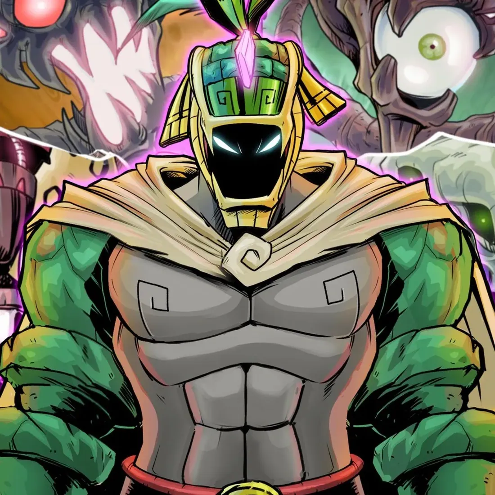
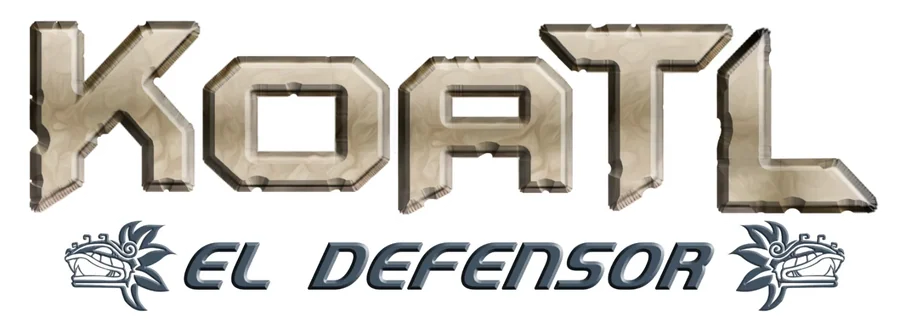
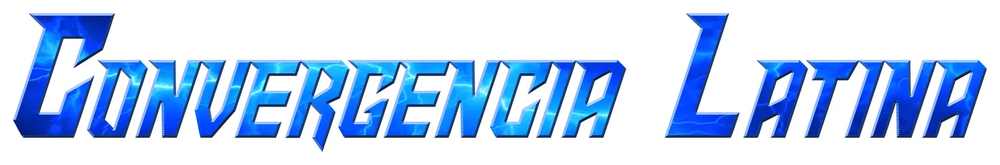
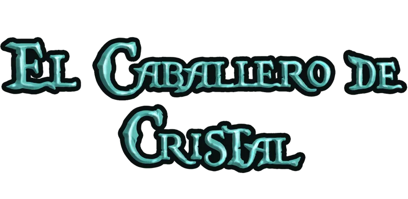
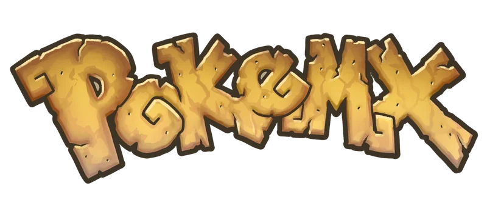
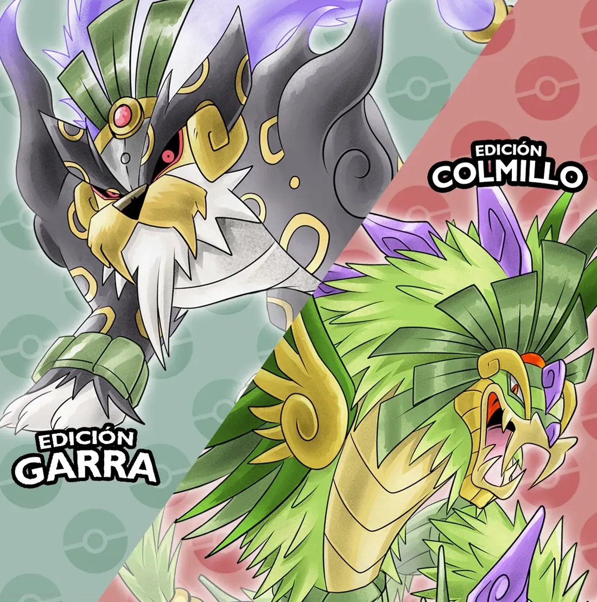
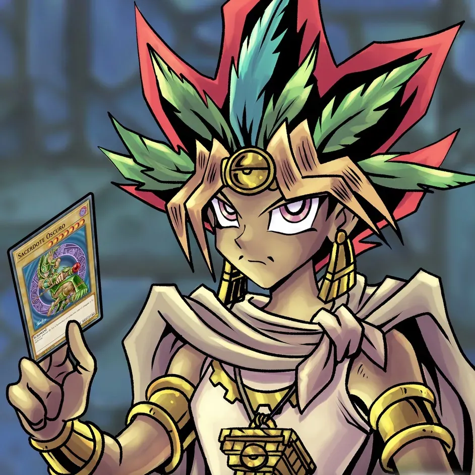
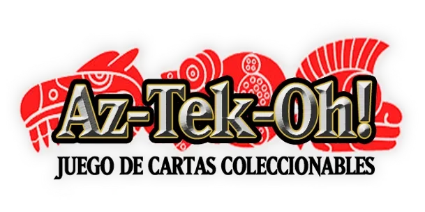

Cómics
Los proyectos de cómic independiente que he autopublicado o en los que he trabajado. Todo puede pasar en este multiverso de posibilidades ilimitadas.


Koatl el Defensor
El campeón elegido por el dios Quetzalcóatl, oculto tras el rostro de un chico tének, que usará su poder ancestral para enfrentar todo tipo de amenazas.
Mi serie principal desde 2014: más de 500 páginas, tomos recopilatorios, una edición de lujo con Decomixado, un videojuego y un juego de cartas.
Koatl el Defensor presenta

Convergencia Latina
Cuatro superhéroes de cuatro países de América Latina se encuentran por primera vez en una misma historia.
Koatl, heraldo de Quetzalcóatl, cruza su camino con Saic, guerrero que carga la maldición de Chía, la diosa muisca de la Luna; con La Chola Power, semidiosa andina hija del dios Sol; y con el Caballero Rojo, heredero de una orden de guardianes contra lo sobrenatural.
Cada uno viene de un cómic independiente con historia propia: el Caballero Rojo debutó en 1996, La Chola Power en 2008, Saic en 2009 y Koatl en 2014. Convergencia Latina es el punto donde esas trayectorias se juntan y la primera historia del universo compartido que impulsamos editoriales y artistas de la región, con héroes nacidos de nuestros mitos y nuestras raíces.
- Koatl el DefensorMéxico · Yair Artz
- SaicColombia · Johann García
- La Chola PowerPerú · Martín Espinoza
- El Caballero RojoArgentina · Tony Torres y Mariano Navarro
Un proyecto de Codex Studio con Ave Negra Cómics, MED Comics y Caballeros, Las aventuras del Caballero Rojo.
Convergencia Latina, Tomo 2
La historia sube de nivel: el mundo declara a los héroes una amenaza global.
Entre cámaras de vigilancia y pantallas que gritan “No más héroes”, Koatl, Saic, La Chola Power y el Caballero Rojo vuelven a coincidir, y en la portada aparecen nuevos rostros.


El Caballero de Cristal
Vulcar es un misterioso joven con cristales que sobresalen de su piel, perdido en el vasto continente de Phorus.
Deberá emprender un gran viaje y formar alianzas si quiere descubrir su verdadero origen.

PokeMX
La región “Meshikoh” te espera, con 130 especies nuevas nunca antes vistas, todas inspiradas en la flora, la fauna y la cultura mexicana.
Un proyecto de ilustración realizado entre 2019 y 2021: un universo alterno en clave de sátira y parodia, con arte completamente original. Su resultado físico fue una edición coleccionista de producción muy limitada, sólo 200 piezas, para fans de la franquicia y del proyecto.
PokeMX es un proyecto de fans sin afiliación con The Pokémon Company, Nintendo ni Game Freak.

PokeMX: conoce a los artistas detrás de la región mexicana


Az-Tek-Oh!
En el México prehispánico, tlatoanis y sacerdotes combatían con oscuros poderes e invocaban bestias tan poderosas que casi destruyen el mundo.
Una parodia de juego de cartas coleccionables en clave mexica. Su primera parte es “Memorias ancestrales”.
Az-Tek-Oh!: si Yu-Gi-Oh! fuera mexicano, parte 1